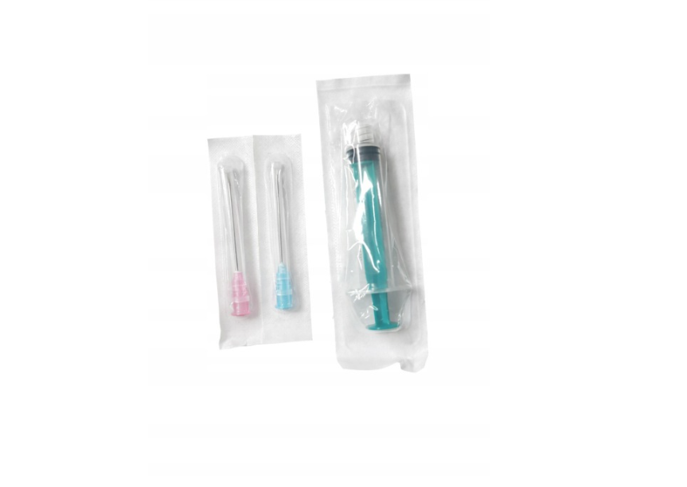
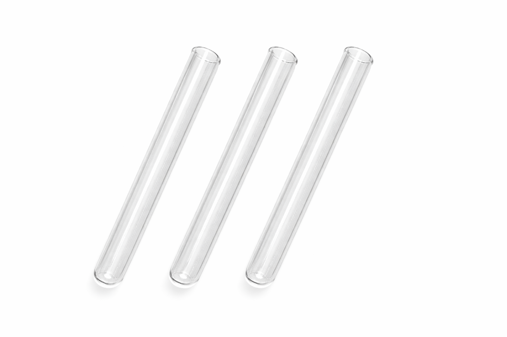
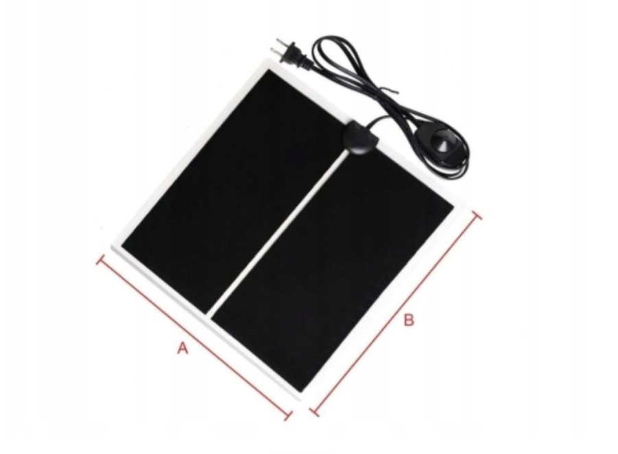
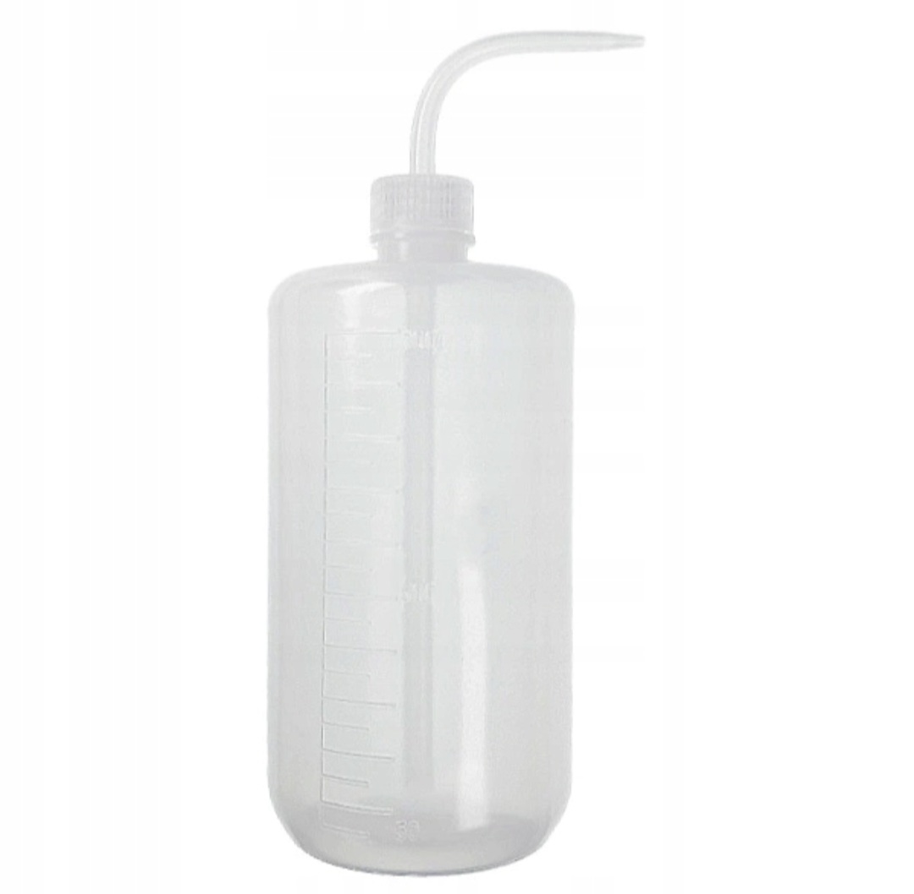
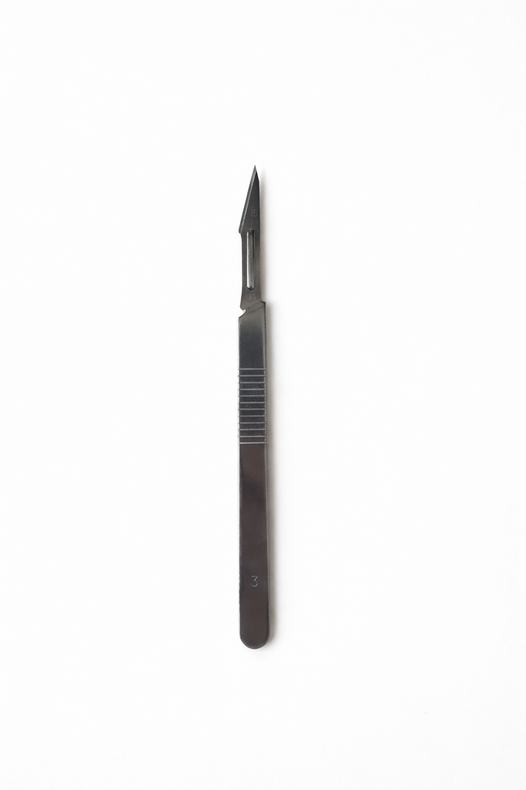
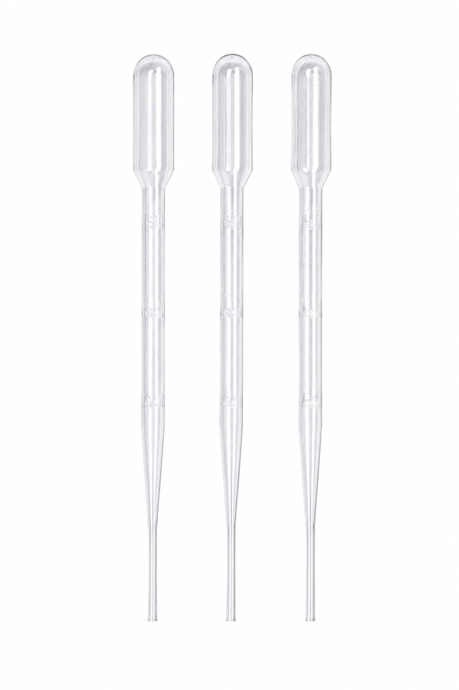

.png)
STRONG ANTS

Strzykawka i igły są przydatne w hodowli mrówek. Można nimi dawkować miód, nawadniać formikaria czy też ułatwiają przygotowanie first stepu.

Probówki 16x160 mm do zakładania nowych kolonii. To niezbędne narzędzie każdego hodowcy mrówek Idealne dla młodych królowych oraz rozwijających się kolonii mrówek.
Naturalny pokarm dla Messor barbarus. Len znajduje się w wygodnej probówce PS 16x65 mm.
Nowoczesne formikaria akrylowe oraz drukowane w 3D. Przygotowane z myślą o wygodnej i bezpiecznej hodowli kolonii mrówek.

Nowoczesne karmidełko drukowane w technologii 3D. Ułatwia podawanie miodu, nasion oraz owadów karmowych. Idealne do utrzymania czystości na arenie formikarium.
✔ stabilna konstrukcja
✔ łatwe czyszczenie
✔ idealne do miodu i karmówki
✔ estetyczny wygląd

Profesjonalna pęseta ze stali nierdzewnej do prac przy formikarium. Idealna do karmienia, sprzątania oraz przenoszenia elementów dekoracji.
✔ długości: 13 cm / 18 cm / 25 cm
✔ stal nierdzewna
✔ precyzyjna końcówka
✔ wygodna w użyciu

Profesjonalna mata grzewcza przeznaczona do ogrzewania formikariów, terrariów oraz hodowli egzotycznych zwierząt. Pozwala utrzymać stabilną temperaturę niezbędną do prawidłowego rozwoju kolonii mrówek. Idealna dla gatunków wymagających wyższych temperatur oraz szybszego rozwoju potomstwa.
✔ regulacja temperatury
✔ równomierne ogrzewanie
✔ bezpieczna dla kolonii mrówek
✔ energooszczędna konstrukcja
✔ idealna do formikariów i terrariów

Wygodna butelka do nawadniania formikariów, aren oraz probówek hodowlanych. Umożliwia precyzyjne dozowanie wody bez ryzyka zalania kolonii. Niezastąpione akcesorium podczas codziennej opieki nad mrówkami.
✔ pojemność 1000 ml
✔ wygodne dozowanie wody
✔ lekka i poręczna konstrukcja
✔ idealna do formikariów
✔ trwały mechanizm spryskujący

Profesjonalny skalpel z zestawem wymiennych ostrzy, idealny do przygotowywania owadów karmowych dla kolonii mrówek. Ułatwia dzielenie pokarmu oraz precyzyjne prace przy hodowli. Wysoka ostrość zapewnia wygodę i dokładność użytkowania.
✔ bardzo ostre ostrza
✔ wygodny uchwyt
✔ precyzyjne cięcie
✔ idealny do karmówki
✔ zestaw wymiennych ostrzy

Zestaw pipet do precyzyjnego podawania wody, miodu oraz innych płynów dla mrówek. Idealne do nawadniania probówek, karmienia kolonii oraz codziennej pielęgnacji formikariów.
✔ precyzyjne dozowanie
✔ pojemność 3 ml
✔ lekkie i wygodne
✔ idealne do miodu i wody
✔ zestaw 3 sztuk

Wysokiej jakości probówki szklane do zakładania nowych kolonii mrówek. Idealne dla młodych królowych oraz rozwijających się kolonii. Zapewniają odpowiednią przestrzeń i komfort podczas początkowego etapu hodowli.
✔ szkło wysokiej jakości
✔ idealne dla królowych
✔ łatwa obserwacja kolonii
✔ wygodne zakładanie hodowli
✔ trwałe i bezpieczne

Personalizowane etykiety do formikariów, terrariów oraz pojemników hodowlanych. Świetny sposób na estetyczne oznaczenie gatunku mrówek, nazwy kolonii lub parametrów hodowli.
✔ możliwość personalizacji
✔ estetyczny wygląd
✔ idealne do formikariów
✔ trwały nadruk
✔ profesjonalny wygląd hodowli